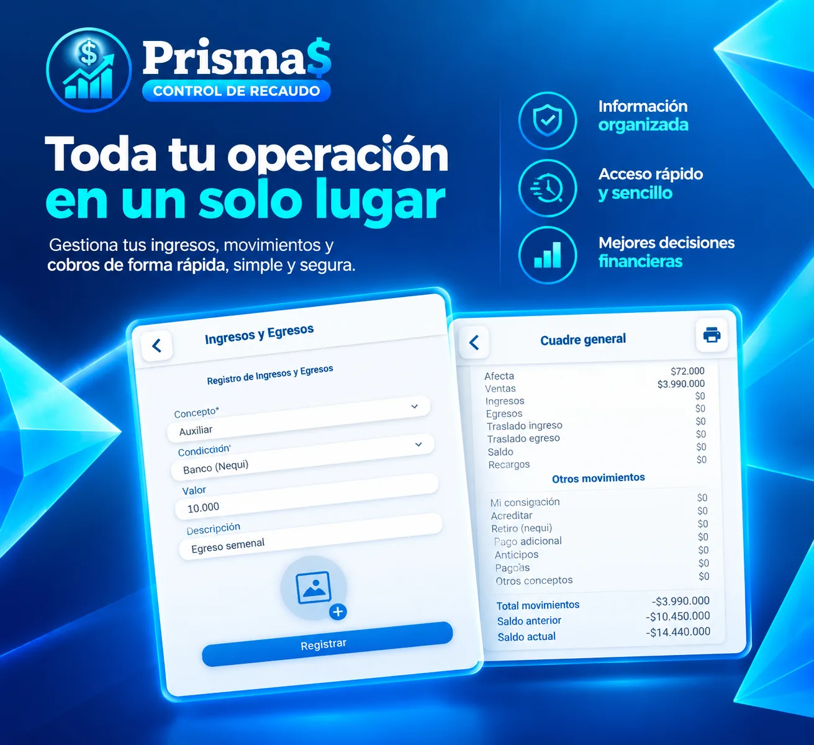
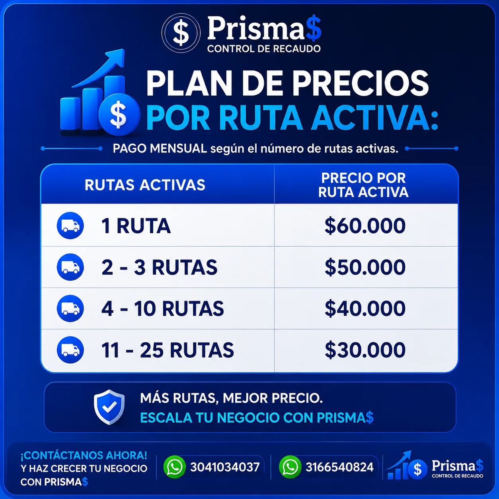

Controla tu recaudo. Toma decisiones en tiempo real, controla rutas y cuadres al día y centraliza tu operación completa.
Centraliza tus cobros, movimientos, clientes y reportes en una sola plataforma.

Cuando el recaudo crece,
también crece la complejidad.
Información dispersa
Tus cobros y movimientos quedan repartidos entre distintas fuentes.
Por qué y para quién
Por qué: cuando los cobros viven en varias fuentes, el cuadre se complica y se pierde la vista real del recaudo.
Para quién: negocios que registran cobros en papel, notas o varios canales y necesitan una sola fuente de verdad.
Poca visibilidad
Difícil saber qué pasó con cada movimiento en el momento en que ocurre.
Por qué y para quién
Por qué: sin una vista oportuna de cada movimiento, las decisiones del día a día se toman con retraso.
Para quién: quien quiere saber al momento qué abonos entraron y qué queda pendiente.
Seguimiento manual
Demasiado tiempo dedicado a revisar y cuadrar registros a mano.
Por qué y para quién
Por qué: cuadrar a mano consume tiempo que se invierte mejor en atender clientes y vender.
Para quién: equipo y personas que hoy pasan horas revisando registros al cierre del día.
Prisma$ pone el control
en tus manos.
Una plataforma diseñada para ayudarte a registrar, monitorear y analizar tu operación de recaudo.
Tiempo real
Por qué: la operación se actualiza al momento para decidir con la información de hoy, no de ayer.
Para quién: quien necesita saber qué pasa en su recaudo mientras el día avanza.
Reportes
Por qué: los datos ordenados se convierten en información útil para revisar y decidir.
Para quién: quien cierra el día y quiere un resumen claro de su operación.
Clientes
Por qué: ver el estado de cada cliente permite hacer seguimiento y evitar abonos perdidos.
Para quién: negocios que manejan varias cuentas o rutas de cobro.
Movimientos
Por qué: registrar cada entrada y salida deja un historial ordenado de tu operación.
Para quién: quien quiere saber exactamente qué entró y qué salió.
Alertas
Por qué: los avisos ayudan a no perder de vista pagos pendientes ni movimientos por revisar.
Para quién: quien atiende muchas cuentas y necesita recordatorios oportunos.
Registrar tus cobros es muy fácil.
Un proceso claro, de la visita al reporte.
-
01
Visita a tus clientes
Llega a cada cliente con la operación lista para registrar.
-
02
Registra sus abonos
Guarda cada abono de forma ordenada y centralizada.
-
03
Genera recibos de pago
Entrega comprobantes claros en el momento.
-
04
Visualiza el movimiento
Consulta el estado de tu operación al instante.
-
05
Genera reportes
Convierte tus registros en información para decidir.
- Registro de cobros
- Monitoreo en tiempo real
- Ingresos y egresos
- Recibos de pago
- Reportes y cuadre
- Multi-dispositivo
Monitorea cada movimiento
en tiempo real.
Consulta movimientos, estados y actualizaciones sin perder de vista tu operación.
Todo bajo control.
Monitoreo en tiempo real
Consulta el estado de tu operación cuando lo necesites.
Por qué y para quién
Por qué: ver el estado de la operación al momento reduce sorpresas y permite actuar rápido.
Para quién: negocios que necesitan saber qué pasa mientras el día avanza.
Registro de cobros
Guarda cada abono de forma ordenada.
Por qué y para quién
Por qué: cada abono guardado con orden evita duplicados y facilita el cuadre.
Para quién: rutas de cobro o ventas a plazos con muchos abonos diarios.
Reportes
Transforma movimientos en información útil.
Por qué y para quién
Por qué: la información ordenada se convierte en decisiones y reemplaza el conteo manual.
Para quién: quien debe resumir la operación sin hacer cálculos a mano.
Control de movimientos
Ten claridad sobre ingresos y egresos.
Por qué y para quién
Por qué: ver ingresos y egresos juntos da claridad para cuadrar la operación.
Para quién: quienes cierran el día y quieren saber si todo cuadra.
Información centralizada
Todo tu recaudo en un solo lugar.
Por qué y para quién
Por qué: un solo lugar para cobros, clientes y movimientos elimina la dispersión que complica el control.
Para quién: negocios con operación repartida en varias personas o puntos.
Acceso desde cualquier dispositivo
Lleva el control contigo, donde estés.
Por qué y para quién
Por qué: el control viaja con la operación y se puede consultar desde smartphone, tablet o computador.
Para quién: dueños y equipos que atienden fuera del local y necesitan estar al día.
Control y confianza
en cada movimiento.
- Información protegida.
- Visualización clara.
- Seguimiento de movimientos.
Todo lo que necesitas,
desde una sola plataforma.
Monitoreo
Tu operación, actualizada al instante.
Dashboard
Una vista completa de tu operación.
Movimientos
Ingresos y egresos claros.
Clientes
Seguimiento ordenado de cada cliente.
Reportes
Información lista para decidir.
Lleva tu recaudo
al siguiente nivel.
Conoce Prisma$ y descubre una forma más clara de controlar tu operación.
- Cuadre de tu operación
- Movimientos e ingresos
- Reportes para decidir
Preguntas frecuentes.
¿Qué es Prisma$?
Es una plataforma de control de recaudo para registrar, monitorear y analizar tu operación desde un solo lugar.
¿Qué puedo controlar con Prisma$?
Puedes centralizar cobros, movimientos, clientes y reportes, con información en tiempo real de tu operación.
¿Cómo registro mis cobros?
El proceso es simple: visita a tus clientes, registra sus abonos, genera recibos, visualiza el movimiento y genera reportes.
¿Desde qué dispositivos puedo acceder?
Prisma$ está pensado para usarse desde tu smartphone, tablet o computador.
¿Cómo solicito una demo?
Puedes solicitar una demostración desde los botones de esta página para conocer la plataforma.
¿Para quién es Prisma$?
Está pensado para negocios que manejan cobros, abonos o rutas de recaudo y quieren ver su operación desde un solo lugar.
¿Qué información encuentro en los reportes?
Puedes revisar resumen, movimientos, clientes e ingresos y egresos, y generar el cuadre general de tu recaudo.
¿Necesito experiencia contable para usarlo?
No. La idea es que registres los abonos de tus clientes, revises el movimiento y generes tus reportes con pasos sencillos.
¿Cómo cuido el acceso a mi cuenta?
Usa una contraseña personal y no la compartas. Si crees que alguien más tuvo acceso a tu cuenta, avísanos de inmediato.
Elige el plan
que encaje con tu operación.
Un único costo claro, con todos los beneficios de Prisma$. Pregunta por nuestra promoción de lanzamiento.
